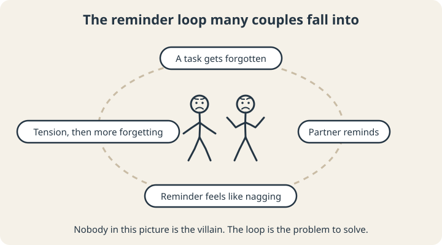
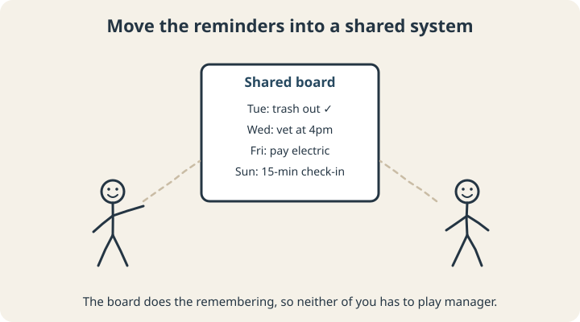

September 23, 2026
ADHD and Relationships: What Helps When One Partner Has ADHD

If you’re in a relationship where one person has ADHD, you may recognize a certain kind of argument. It starts with something small, like the forgotten errand or the bill that didn’t get paid or being 30 minutes late again, and within a few minutes it’s about something much bigger: “You don’t listen.” “You never let anything go.” “I have to do everything around here.”
Both people usually walk away feeling unappreciated. And both are often right about their own experience.
This post looks at how ADHD shows up in romantic relationships, what the research says, and practical ways couples share the load so that ADHD stops running the relationship.
What the research says
The research on ADHD and couples is smaller than you might expect, but the findings point in a consistent direction.
A 2021 review of adult ADHD and romantic relationships found that adults with ADHD tend to report less satisfaction in their relationships and more trouble navigating them, and are more likely to divorce, than adults without ADHD. The same review noted that very few studies have tested treatments designed specifically for couples affected by ADHD.1
One detail from an earlier study is worth knowing. When researchers compared 33 married adults with ADHD and their spouses to couples without ADHD, the adults with ADHD reported lower marital satisfaction and more family problems. Their spouses, on average, didn’t report lower satisfaction than other spouses, but more of them fell into the range that suggests a struggling marriage.2 In other words, ADHD affects both partners, and it doesn’t always affect them the same way.
How ADHD shows up between two people
- Forgetting the plan, the errand, the thing you said you’d do. To the other person, it can feel like they don’t matter.
- Time: lateness, underestimating how long things take, losing track during a hobby. (Our post on time blindness explains why.)
- Uneven load: one partner quietly takes over bills, calendars, and planning because it’s easier than waiting, and then resents it.
- Attention: drifting off mid-conversation, or looking at a phone while the other person is talking.
- Emotion: quick frustration, big reactions to small criticism, and shutting down during conflict.
One distinction helps a lot of couples: forgetting and not caring are two different things. An ADHD brain can care deeply about something and still lose track of it, because remembering depends on executive function, and caring doesn’t. That doesn’t make the missed thing okay. It changes what the fix looks like.
The reminder loop
Many couples slide into a pattern that feels awful for both people.

A task gets forgotten. The other partner reminds. Then reminds again. The partner with ADHD starts hearing criticism in every reminder and avoids the task, or the conversation, or both. The reminding partner feels like a manager instead of a partner, and gets more frustrated. Round it goes.
Over time this can settle into something that feels more like a parent and a child than two adults. Neither person wants that role. Recognizing the loop is often the first thing that lets a couple step out of it together.
What helps
1. Put the reminders into a system

A shared calendar, a whiteboard by the door, recurring phone alarms, autopay for bills. When the reminder comes from the system, nobody has to be the one who nags, and nobody has to feel nagged.
2. Split the work by strengths
Instead of dividing chores evenly on paper, divide them by what each person actually does well. The partner with ADHD may be great at the big, energetic jobs (the deep clean, the spontaneous fix, the fun weekend plan) and struggle with the small, repetitive ones. Trading tasks so each person carries what they’re good at is fairer in practice, and it stops setting one person up to fail.
3. Hold a short weekly check-in
Fifteen minutes, same time each week. Look at the calendar together, decide who’s doing what, and raise anything that’s been bothering you while it’s still small. It moves planning out of the heat of the moment and into a calmer conversation.
4. Name the pattern, not the person
“We’re in the reminder loop again” is easier to hear than “You always forget.” It turns the problem into something you’re solving together.
5. Write down how you work
A short personal operating manual (how you like to get reminders, what helps you focus, what to do when you shut down) gives your partner practical information they can use, which beats guessing and getting it wrong.
6. Get outside help when you need it
If you’re stuck, a couples therapist who understands ADHD can help with the conflict and the hurt that’s built up. Individual treatment for ADHD, and coaching on the practical systems, can take pressure off the relationship too. And if either partner feels unsafe, that’s a different situation entirely: in the U.S., the National Domestic Violence Hotline is available 24/7 at 1-800-799-7233.
A shared problem
ADHD can put real strain on a relationship, and the research backs that up. Day to day, much of that strain shows up as specific, repeatable patterns like the reminder loop, the uneven load, and the forgotten plans, and patterns can be redesigned. Treating ADHD as a shared problem to engineer around leaves a lot more room to enjoy each other.
If you want a place to start, the free Personal Operating Manual builder walks you through writing down how you work best, with guided prompts and a downloadable version you can share with your partner.
Scope note: This article is educational. Coaching isn’t couples therapy, and it isn’t a substitute for medical or psychological care.
Sources
- Wymbs, B. T., Canu, W. H., Sacchetti, G. M., & Ranson, L. M. (2021). Adult ADHD and romantic relationships: What we know and what we can do to help. Journal of Marital and Family Therapy, 47(3), 664–681. doi.org/10.1111/jmft.12475
- Eakin, L., Minde, K., Hechtman, L., Ochs, E., Krane, E., Bouffard, R., Greenfield, B., & Looper, K. (2004). The marital and family functioning of adults with ADHD and their spouses. Journal of Attention Disorders, 8(1). doi.org/10.1177/108705470400800101